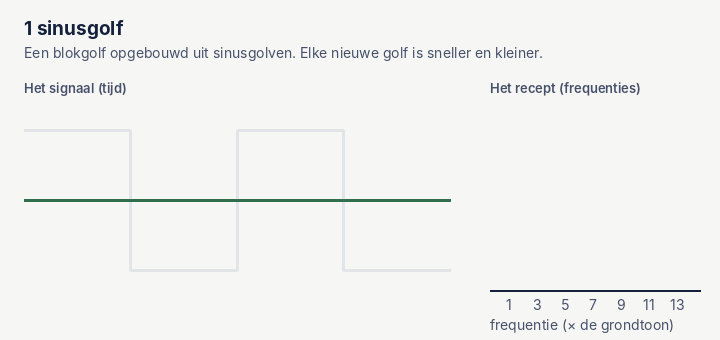

De Fouriertransformatie, simpel uitgelegd
Elk signaal, hoe rommelig ook, is te schrijven als een optelsom van simpele golven. De Fouriertransformatie zoekt uit welke golven dat zijn en hoe sterk elk is. Kort gezegd: van een signaal maakt hij een recept.

Een voorbeeld: een akkoord op de piano
Speel je drie toetsen tegelijk, dan hoor je één klank. Toch kan een geoefend oor de drie losse tonen eruit halen. Dat is precies wat de Fouriertransformatie doet, maar dan met getallen: uit één gemengd signaal haalt hij de losse tonen, en vertelt hij hoe hard elke toon klinkt.
Daarbij horen twee manieren om naar hetzelfde signaal te kijken:
- In de tijd: hoe het signaal op en neer gaat, seconde na seconde. Zo meet een sensor het.
- In frequenties: welke golven erin zitten en hoe sterk. Dat heet het spectrum.
De Fouriertransformatie is de vertaling van de ene kijk naar de andere. Er bestaat ook een weg terug: van recept weer naar signaal.
Probeer het zelf: meng drie golven
Hieronder kun je drie golven mengen: een langzame (1 keer per seconde, 1 Hz), een middelste (4 Hz) en een snelle (9 Hz). Boven zie je het signaal, onder het spectrum dat de Fouriertransformatie ervan maakt. Hoe rommelig het signaal er ook uitziet, het spectrum laat precies zien wat erin zit.
Zet de ruis eens hoger. In het signaal zie je de golven bijna niet meer, maar in het spectrum blijven ze herkenbaar als pieken, vooral de sterkere. Ruis smeert zich uit over alle frequenties, terwijl een echte golf op één plek een duidelijke piek geeft.
Waarvoor gebruik je het? Ruis weghalen
Dat laatste maakt Fourier zo handig voor sensordata. Stel, je meet een langzame beweging, maar de sensor voegt snelle trilling en ruis toe. In het spectrum zie je dat de beweging bij de lage frequenties zit en de ruis overal. Haal je de hoge frequenties weg en reken je terug, dan blijft een rustig signaal over. Dat heet een laagdoorlaatfilter.
Zet de grens te laag en je gooit ook een deel van de echte beweging weg: het signaal wordt te glad. Zet hem te hoog en de ruis blijft zitten. Net als bij het Kalmanfilter is de kunst de juiste balans.
Een voorbeeld uit mijn eigen data: het ritme van lopen
Bij mijn eindopdracht liepen we met een bewegingssensor op de voet. Links tien seconden van de versnelling, rechts het spectrum van veertig seconden lopen.
De hoogste piek ligt bij ongeveer 0,65 Hz: dezelfde voet komt zo'n 39 keer per minuut neer, dus met beide voeten rond de 78 stappen per minuut. De kleinere pieken bij veelvouden van die frequentie heten harmonischen. Ze laten zien dat een stap geen nette sinusgolf is, maar een korte klap gevolgd door rust.
Pas op: te langzaam meten
Er zit een addertje onder het gras. Als je te weinig metingen per seconde doet, kun je snelle golven niet meer zien. Erger nog: ze vermommen zich als langzame golven. Dat heet aliasing. Je kent het van films waarin wielen van een auto langzaam achteruit lijken te draaien.
De regel is simpel: je kunt alleen frequenties zien tot de helft van het aantal metingen per seconde. Meet je 100 keer per seconde, dan zie je tot 50 Hz. Die grens heet de Nyquist-frequentie.
In formules, voor wie wil
De Fouriertransformatie vergelijkt je signaal met golven van elke frequentie en kijkt hoe goed ze overeenkomen. Voor één frequentie f:
Voor elke frequentiesterkte(f) = som over alle metingen van: meting × golf met frequentie f
Grote somde golf zit sterk in je signaal
Som rond nulde golf zit er niet in, de plussen en minnen heffen elkaar op
In de echte formule is die golf een cosinus en een sinus tegelijk, zodat ook de verschuiving in de tijd wordt meegenomen. Computers gebruiken de FFT, de Fast Fourier Transform: een slimme rekenmethode die hetzelfde antwoord geeft, maar duizenden keren sneller.
Waar je het in de praktijk tegenkomt
- Sensordata: ruis en trillingen uit metingen van IMU's, versnellingsmeters en drukopnemers halen.
- Constructies en machines: trillingen van bruggen, windturbines of pompen meten. Een nieuwe piek in het spectrum kan wijzen op schade of slijtage.
- Getijden: eb en vloed zijn een optelsom van golven, door de zon en de maan. Getijtafels worden gemaakt door die golven uit lange meetreeksen te halen.
- GNSS-ontvangers gebruiken de FFT om de zwakke signalen van satellieten snel terug te vinden.
- Muziek en foto's: een equalizer, mp3 en jpeg werken allemaal met frequenties.
Wat ik zelf heb geleerd
In het tweede deel van mijn eindopdracht gebruikten we een FFT om ruis uit versnellingsdata te halen. Toen ik de code voor deze notitie terugkeek, zag ik dat onze grens op 907 Hz stond. Bij 100 metingen per seconde kun je maar tot 50 Hz zien. Daardoor haalde het filter geen ruis weg, maar maakte het het hele signaal tien keer kleiner.
De les: kijk altijd eerst naar het spectrum voordat je filtert. Dan zie je waar je signaal zit, waar de ruis zit en waar de Nyquist-grens ligt.
Bronnen: Kalid Azad, An Interactive Guide To The Fourier Transform, BetterExplained; Steven W. Smith, The Scientist and Engineer's Guide to Digital Signal Processing. De loopdata komt uit mijn eindopdracht; de gif en simulaties zijn van mij.